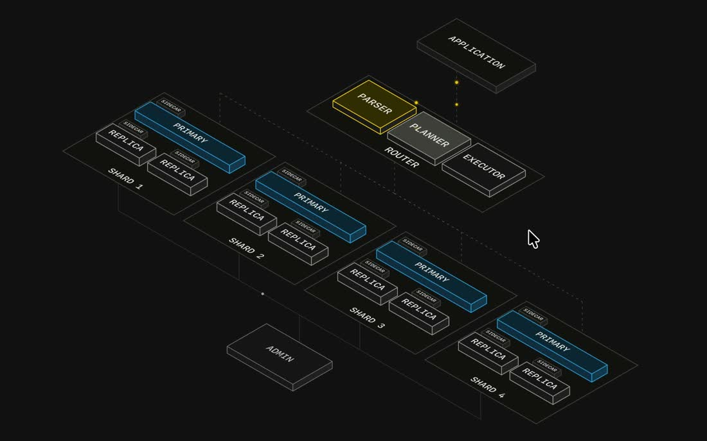
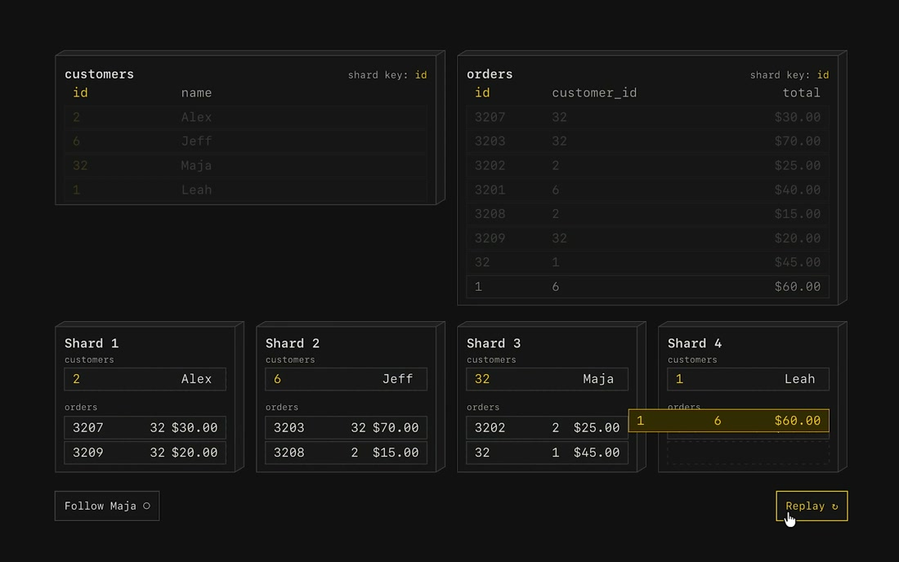

整张地图一直在。当前步骤发亮，其余压暗。跟住 Maja，才看见她的订单不在同一个 shard 上。
黑底等轴机房。Application 在上，Router 拆成 Parser / Planner / Executor，四个 shard 各有 Primary、Replica、Sidecar。当前步骤发黄，其余只留线。光点沿虚线走。
发明是一张不换的图：跟住一个具体的人，时间可以倒放。Follow Maja 之后，她的订单散落在多个 shard 上。join 为什么难，跟住她之后直接看见。


| 项目 | 取值 |
|---|---|
| 世界转角 | rotateX 58° / rotateZ −44° |
| 当前色 | Parser / 光点 / 订单条 #e2c44a |
| Primary | #1b4f6e，描边 1px |
| Replay | Application → Parser（黄）→ Planner → Executor → 四 shard，约 2.8s |
| Maja | customers.id 32 在 shard 3。订单 customer_id=32 落在 shard 1 与 2 |
#iso.is-gold，其余 .is-dim。世界 rotateX(58deg) rotateZ(-44deg)。#follow#replay